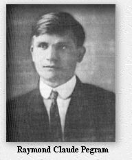
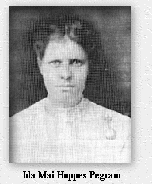

| We are happy to share this tribute to
Claude
Raymond Pegram and his wife Ida Mai Hoppes Pegram which
was written by their daughter, Dorothy Pegram Roland, the author of Some
Middle Tennessee Pegrams and Their Ancestors. This is taken with
permission from her book.
|
|||||||||||||||||||||||||
 |
 |
||||||||||||||||||||||||
|
Claude was born February 3, 1885, on Halls Creek, near the town of Waverly, in Humphreys County, Tennessee. He was the fourth son to be born to Benjamin Petus Pegram and Mary Elizabeth (Johnson) Pegram. He was the grandson of William James Pegram and Mary Elizabeth (Richardson) Pegram, and the great grandson of Nathan Petus Pegram. His mother was a school teacher, and was teaching at the old Elizabeth School at the time that she married. It was located on Big Richland, in Mariah Hollow, in Humphreys County. Mariah Hollow was named for her grandmother, Mariah (Thompson) Turner, daughter of Robert Thompson, and granddaughter of James Thompson. Both Robert and James arrived on the flotilla with John Donelson, in the settlement of Nashville. Some of the earliest settlers to Humphreys County settled along Halls Creek. Robert Thompson is buried in the Sullivan Cemetery, on Halls Creek Road. Elizabeth School was named in honor of Elizabeth (Givens) Fortner, who donated the land for the school. Claude's mother became mentally ill when he was still a young boy, and eventually had to be institutionalized at Central State Hospital for the Insane. It is now more appropriately named, the Middle Tennessee Mental Health Institution. It is located in Davidson County. Mary Elizabeth was hospitalized for about eight years, and died in 1905, while still a patient there. Due to his mother's illness, Claude lived most of his youth with his paternal grandparents, William James and Mary Elizabeth (Richardson) Pegram. He married-Ida Mai Hoppes, May 21, 1906, in Erin, Houston County. He was twenty-one and she was seventeen at the time of their marriage. She was born September 25, 1888, the youngest daughter of Andrew Jackson Hoppes and Rachel Ivy (Howell) Hoppes. She was born on Walnut Street, in Erin. Ida Mai was the sister of Laura Belle Hoppes, who married William Curren Pegram, Claude's uncle. After their marriage, Claude and Ida Mai settled in Erin, where their first two children were born. While these boys were sma11, the family moved to Cedar Hill, in Robertson County, Tennessee. Here Claude owned and operated a blacksmith shop and a grist mill, which were located next door to the Cedar Hill Milling Company.° He and Ida Mai purchased a lot in Cedar Hill for thirty-five dollars, then later sold it for eighty-five dollars. Three of their sons were born here. Claude joined the Robertson County Methodist Church, at Cedar Hill.° According to fa,ily tradition, he invented a glider, or gyro-plane, and the children were let out of school to watch him fly it. An account the event is said to have been written up in a local newspaper.° World War I broke out while the family lived here. Next, Claude traded the grist mill for a T Model Ford, and moved his family to Adams, Tennessee, in the same county. He worked for a man named Gossage, as a blacksmith in his shop here. They lived in Adams only a short time. At some time prior to 1917, they lived at Spring Hill, in Maury County, Tennessee, on the Williamson County line.° By the time of the birth of their first daughter, on March 1, 1918, the family had moved to Guthrie," in Todd County, Kentucky, where Claude owned and operated a blacksmith shop. They lived here only a short time, when they moved to Davidson County, Tennessee, and Claude went to work for the Old Hickory Powder Plant. They were living on Greenland Avenue, in East Nashville at the time. Clarence, "Buster," Pegram, son of Ida Mai's sister, Laura (Hoppes) Pegram, and her husband Will Pegram, Claude's uncle), was living with them. He had come to Nashville to work at the powder plant. Claude and Ida Mai were the first members on either side of the family to move to the city. Several of their kinfolks, who also migrated to the city of Nashville, stayed with them until they could get settled in homes of their own. Or, in the case of the young single cousins, until they got homesick and went back to the country. They came one or two at a time. Claude and Ida Mai didn't seem to mind how many came, or how long they stayed. Claude, who was a big man, was fond of watermelon. Family tradition has it that, one summer evening after work he bought one before he and Buster boarded the open air trolley for home. Claude rode with the watermelon tucked under one arm, and the other arm holding onto the overhead bar. The motorman made a sudden, unexpected stop, and off went Claude and his watermelon, which needless to say, burst into pieces. Claude threatened to sue the company that owned the trolley but never did. Next, the family moved to Edenwold, Tennessee, and were living here when the Armistice, ending World War I, was signed, on November 11, 1918. They remained here only a short time, then moved to Boscobel Street, in East Nashville. In 1919, Claude moved his family to Halls Creek, out from Waverly, in Humphreys County, where he was born. Here he cut timber on Clarence Turner's place, at the mouth of Big Richland Creek, on Clydeton Ferry Road, (now Clydeton Road), and ran a sawmill. He was a member of the Halls Creek Cumberland Presbyterian Church. In 1920-21, the family moved back to Nashville, and Claude went to work as a blacksmith-machinist at the L.& N., (Louisville and Nashville), Railroad, at Radnor Yards, in South Nashville. He was working here at the time of the big railroad strike in 1921. They were living at 416 37th Avenue North. Claude's brother-in-law, Bill Hoppes, his Uncle Will Pegram, and his brother, Ernest Pegram, were also working at the railroad when the strike took place. Feeling ran pretty high on both sides during the strike, and brother turned against brother, even. By 1922, Claude was working as a blacksmith-machinist at Standard Machine Company, in Nashville. According to family tradition, he invented a four-horse-drawn tobacco-setter, for which he obtained a patent, a self-cleaning harrow, and adouble sealing lid for cans, both patented. He also invented an automatic coupler for railroad cars. The patent for the tobacco-getter was sold to a man named Fort, who was a banker in Clarksville, for five thousand dollars." The double-sealing lid idea was sold to Standard Machine Company, it is believed. It is thought that he had some kind of deal with the railroad on the automatic coupler. The rights to the self-cleaning harrow are believed to have been sold to a lumberman named Sarge, from Clarksville. Sarge and Claude went in business together, as partners, making the harrows for sale, under the company name of Pegram and Sarge Farm Implements.° They were located at 221 or 222 4th Avenue South, in Nashville.° Claude went on the road in a T Model Ford, selling the harrows. At some time prior to 1924, the family lived in the, "Hill house" on 37th Avenue North. By 1924, Claude was back working for the railroad, during the first part of the year, and in the latter part of the same year he was working at Standard Machine Company. The many job changes by Claude, and the many moves of the family are noted in order to show how one man struggled to make a living for a large family, when his trade as a blacksmith was fast becoming almost obsolete. Other families were also struggling to survive during this time. The family moved next to 228 38th Avenue North. This area of West Nashville was called, "Cat Town". Their youngest son was born here in 1924. By the year 1925, Claude had moved his family to 4001 Park Avenue, in West Nashville, where this writer was born in 1926. Claude was now employed as a blacksmith at E. Gray Smith Company. He bought a new Gray, (the trade name, not the color), automobile. The car caught fire and burned, while parked in the garage.° Later that same year he went to work for George L. Evans, selling automobiles. During the early part of 1928, Claude was working as a welder, then in the latter part of the same year he worked as a blacksmith at Standard Machine Company again. During that same year, he worked at Broadway Motor Company, as an automobile salesman. By now the family had moved to 4704 Kentucky Avenue, still in West Nashville. In 1930, Claude and Ida Mai bought a house at 4606 Idaho Avenue, in the Sylvan Park area of West Nashville. He was now employed at Imperial Motor Company. Claude worked for various automobile agencies over the years. One of them sold Hudson and Essex automobiles, which are no longer manufactured. He worked at Hippodrome, Thornton, and Jim Reed Motor Companies. He had always managed to find work somewhere over the years. Although he had been struggling against it, he was finally beginning to accept the fact that blacksmiths were no longer in demand. The depression hit the economy, and Claude and Ida Mai lost the house on Idaho. By 1932, the family was living at 525 31st Avenue, at the top of the hill, next door to a family of black people, (called colored then). They were the only blacks on the block. The two families got along well, even though neither had ever heard of the words integration and segregation. In 1933, Claude was employed at Dresslar-White Motor Company, where he became one of their star salesmen, winning several diamond pins. He never went back to the blacksmith trade again. In 1934, the family moved to 2714 Craft Street, (now Delaware Avenue), still in West Nashville, where they were living when they had their first telephone installed, a four party line. The economy was pulling out of the depression, and things were looking better for Claude and Ida Mai. He bought a new 1936 Chevrolet automobile with a five hundred dollars bonus for selling automobiles at Dresslar White. The family took their first trip, going to California to see Claude and Ida Mai's oldest son, who lived there. Claude's brother-in-law, Frank Ewer, bought a new Ford for the same price, and went as far as Texas with them. His daughter was doing the driving, when the tire on their car blew out, causing it to flip three times, landing upside down in the middle of the desert. This writer was a passenger in the vehicle. Her uncle's leg was pinned under the open door. Frantic digging in the sand did not free it, and travelers in automobies passing on the nearby highway would not stop and help. Finally, someone did come to our aid, which shows that even back then, some people would not get involved in helping people in distress during an emergency situation. Around 1937, the family moved to the, "Cheatham Place," apartments, in North Nashville. They had just been built, and were Nashville's first experience with public housing. This writer remembers how proud her mother was that the family was able to get one of the new brick apartments. A big defense buildup was beginning to hit the country, and jobs were getting more plentiful, and wages were getting better now. The nation was pulling out of the depression. By the year 1940, Claude had moved the family back to the Sylvan Park section of West Nashville, to 4011 Utah Avenue. In 1941, he and Ida Mai bought another home at 3812 Elkins Avenue, still in West Nashville. During bitter cold weather, in the month of March of that year, their home burned along with almost all of their possessions. They moved next door to the unoccupied house of Ida Mai's neice, and her husband. That same year, on Sunday, December 7, 1941, Japan launched a surprise attack on Pearl Harbor and the United States declared war on that country, soon afterwards declaring war on Germany, also. Machinist were in great demand to fill government contracts, and Claude went to work at Betty Machine Shop. Later that year Claude went in business selling used automobiles, on North 1st Street, in Nashville. He and Ida Mai bought another house at 1600 Forrest Avenue, in East Nashville. And at the age of fifty-seven, Ida Mai went to work at Castner Knott Dry Goods Company, her first public job. Their two sons, and two sons-in-law, had returned from military service by this time. In 1947, Claude and Ida Mai were involved in a tragic automobile and motorcycle accident. One of the teenagers on the motorcycle was killed. Claude was driving his car and Ida Mai was a passenger. They were not injured, but Claude never got over the accident and was never quite the same again. He fell and broke a hip. A few weeks later he had a stroke and died on April 13, 1958. Ida Mai lived five more years and died, May 27, 1963. Both died in Davidson County, and are buried at Spring Hill Cemetery, in the same county.
Children of Raymond Claude Pegram and Ida Mai
(Hoppes) Pegram
|
|||||||||||||||||||||||||